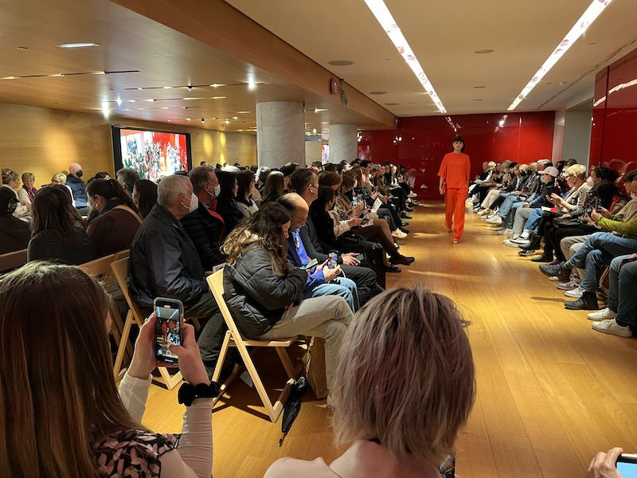
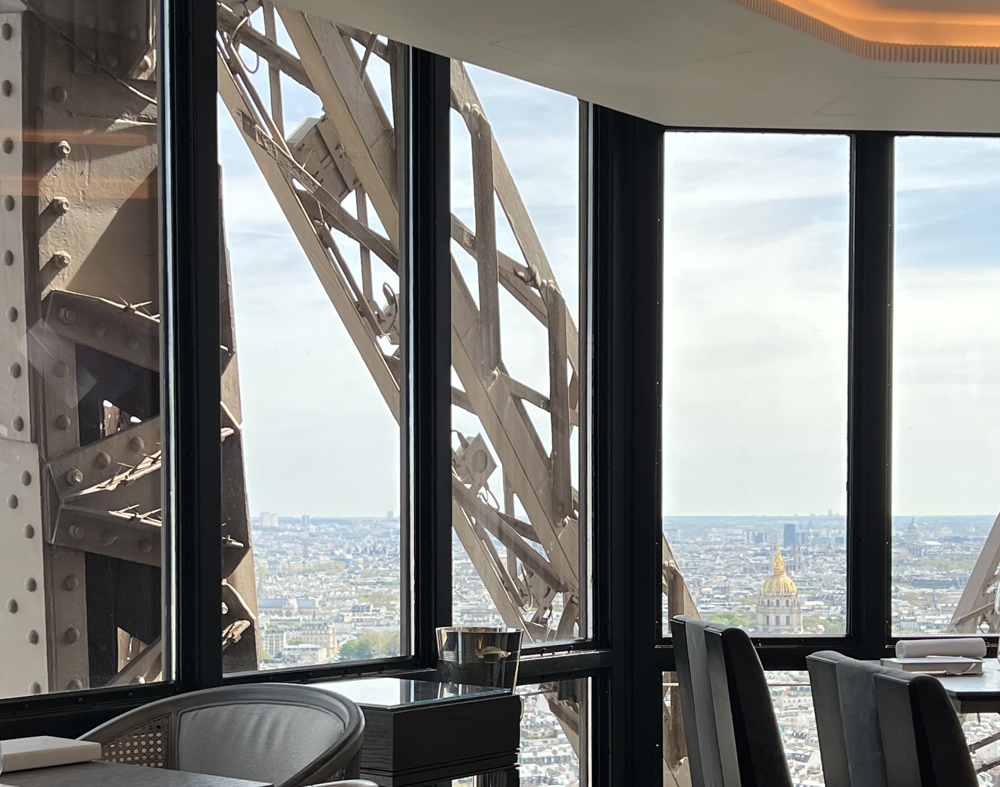

The main part of our trip was the Rick Steves tour, but we had an extra day before and three days after the trip to sight-see on our own. We also had unscheduled time during the Rick Steves tour, where we could do as we pleased. Here's what we did with our time!

Paris was easy to get around via the Metro and bus system, so we effortlessly fit a lot of extra activities into our time in Paris. We visited the famous Galeries Lafayette department store, with its enormous metal-and-stained-glass dome, where we even caught a fashion show.

One highlight of our trip was eating at a restaurant high in the Eiffel Tower. Before leaving for France, we got reservations at the restaurant Le Jules Verne on the tower's second floor. With our reservation, we skipped the entire Tower line and got to head right up to eat an incredible lunch with panoramic views of the city. The service was so good, and it was the most unrushed lunch we've ever had: we were there for about three hours, and they were still telling us we should relax and take our time! By the way, if you plan to go here on your trip, make sure you get a reservation a few months in advance.
Our goal for this day was to head to the Loire Valley, see four châteaux, and then make it back to Paris for bed. Making this work as a day trip was tough, but it was worth it. We woke up very early in the morning to catch a high-speed train from Gare Montparnasse in Paris that would take us to the city of Tours by 10AM. There, we were supposed to meet our local tour company, recommended by Rick Steves. Unfortunately, an unexpected train cancellation meant we arrived at the meeting point about an hour late. Our tour guide was very helpful, and offered to meet us at the second château if we could get an Uber there. We met up with the tour at Chenonceau, a stunning royal château that stretches out over a river, and got to finish the rest of the tour as planned.
We explored the interior of the château and walked the gardens. Then we grabbed lunch and continued on with the tour. We saw two more châteaux that day: Cheverny and Chambord. Chambord is another royal château with what seems like dozens of spires and a famous double-helix staircase inside. From the roof of Chambord, we watched a dressage demonstration in the grounds below. We had an outdoor crêpe and a coffee in the little set of shops on the Chambord grounds.

We were both really excited to see this. It's not easy to get to Giverny by train, so we used a tour company to get us there. We met the tour driver right near the Arc de Triomphe, and rode in a van with five or six other people. It was a Sunday morning so the streets were quiet, even in Paris, and we made good time. Amazingly, we were the first tourists to arrive at the gardens. We had our photo taken on the famous Japanese bridge - with no one else in the frame! The gardens were bursting with flowers. We saw Monet's studios, where the walls are covered with his work, and saw his bright yellow kitchen.
Getting around in France was a breeze. We're really grateful to our tour guide, Marie, who taught us how to use the Parisian metro system. With the unlimited pass that we got as part of our tour, it was super easy to get from place to place in Paris. She also pointed out the bus system, which we wouldn't have considered otherwise. The bus was great because you can do some sightseeing while you're getting from place to place!
 When we were on our own, we were able to use Apple Maps or Google Maps, as well as the
Paris transit app, RATP, to find our way around. We only had to use taxis when we had luggage
with us. For our trips into the countryside, the French high-speed rail system was great.
The trains are clean, super fast, and have reserved seating with tables (which we used
to update our travel journal while we were in transit).
When we were on our own, we were able to use Apple Maps or Google Maps, as well as the
Paris transit app, RATP, to find our way around. We only had to use taxis when we had luggage
with us. For our trips into the countryside, the French high-speed rail system was great.
The trains are clean, super fast, and have reserved seating with tables (which we used
to update our travel journal while we were in transit).
Some of the distant places we visited (the Loire valley châteaux, or Monet's gardens) were too difficult to reach without renting a car. Instead, we found local tour companies in the Rick Steves guidebook who would meet a group at a train station or landmark and then drive them around to specific sites. We're glad we did this because we didn't have to worry about driving long distances, and the guides gave us details about our destination we would never have learned on our own.
We even took a funicular in Montmartre (see the video above)! The funicular is part of the Paris metro system, so our regular pass got us on and off without any extra charge.